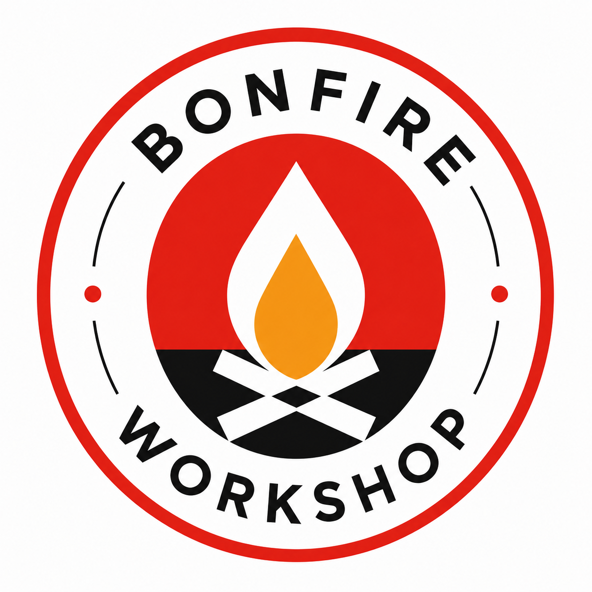

总览
KPI 巨数带 + 需要关注分拣

「出库 2 双绝缘手套给检修一班。」——说完,AI 秘书核对库存、开单、记账、留痕,一气呵成。你负责决定,秘书负责执行;页面只读,每一步都有审计可回放。
传统 ERP 把人训练成录入员。这里反过来:所有业务页面都是只读驾驶舱,改动一律交给 AI 秘书——它按你的权限真实调用系统指令,先核对、再执行、后留痕,拿不准的会追问你。
秘书的每个动作都走与界面同一套指令集,按账号权限过滤——它做不了你本人做不了的事。
库存够不够、要不要借还、挂哪个预算——先查清楚给结论,缺信息会追问,不猜。
每次执行生成完整步骤记录,可逆操作自动配好冲正指令,一句话回滚;高风险动作自动通知有复核权的人。
回复支持表格、加粗、文件链接甚至数学公式;在经典版对话里上传收据照片,它识别后自己建单记账。
从一件工具的借还,到一家公司的资产负债表——同一套设计语言,同一个秘书,同一份数据。
KPI 巨数带 + 需要关注分拣
安全线追踪 · 趋势 · 借还
到货 · 退库 · 批次单据
领用 · 借用归还 · 抢修通道
AI 扫描分级,人来拍板
计划 · 差异分析 · 账实核对
预算树 · 采购申请 · 业财一体
复式总账 · 三大报表 · AA 记账
金融组合 + 数字资产托管与市场
可交互工作流拓扑图
内置 GIS · 定位 · 容量热度
出入库走势 · 储值分布
注册审批 · 角色分级
全量留痕 + 秘书对话档案
AI 密钥 · 语音 · 提示词
点击任意模块查看详情
不是记流水,是真正的复式记账:入库、出库、采购、分润,每一笔业务自动生成借贷平衡的凭证;利润表、资产负债表、现金流量表从总账即时推算。预算划拨走平衡凭证,「挪来挪去挪乱了」从机制上不可能。
| 凭证 · JV-0709-002 | 借方 | 贷方 |
|---|---|---|
| 库存商品 · 绝缘手套 | 1,720.00 | — |
| 应付账款 · 华安电力 | — | 1,720.00 |
| 借贷平衡 · 由后端强制保证 | 1,720.00 | 1,720.00 |
↑ 一次采购入库自动生成的凭证。手工乱账进不了总账:不平衡的分录会被后端直接拒绝。
利润 · 资产负债 · 现金流,按月 / 季 / 年切换,数字可下钻到每一笔凭证。
成本中心 × 科目 × 期间的预算树,占用、支出、划拨全走平衡凭证。
一个真人一个账号一个主体,分摊由秘书按主体精确入账。
流程走到哪一步、卡在谁手里,一张图看清;轮到你的节点亮红可点,点击即交秘书办理。
真实 GIS 地图压成纸墨色调,仓库容量一眼看穿;点图取坐标,定位交秘书保存。
企业数字资产从接入、托管、AI 评估到挂牌交易全生命周期;托管站点与程序独立运行时隔离。
源码防篡改哨兵、AI 值守自愈、每日一致性备份;SSH 纯密钥,审计不可绕过。
每家公司独立数据库、独立权限、独立秘书记忆;顶栏一键切换,数据绝不串门。
对秘书说话即可操作;拍一张收据,识别、建单、入账一条龙——语音与拍照入口现由经典版对话提供,同一后端同一个秘书。
AI 可以替你执行,前提是每一步都可考据。这套系统的信任模型很简单:页面只读 + 秘书执行 + 全量审计。谁在什么时候做了什么、AI 替谁做了什么、每一步的依据是什么——审计页全量回放,连你和秘书的历史对话都按天归档、自动分类。